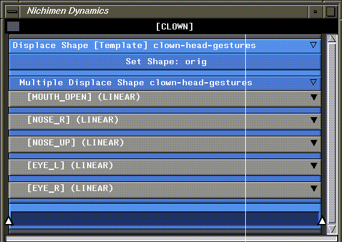

[N-World Contents] [Book Contents] [Prev] [Next] [Index]
Animating Displacements
In this chapter you'll learn how to animate displacements. A displacement is a saved state of a model; you can animate between displacements, or layer displacements over other types of animation (including skeletal animation) to control things such as facial expressions.
In this Chapter
You'll learn how to:
Displacements
Displacements, as mentioned before, are saved states of the same model. To create a displacement, you specify an initial state for the object, make your changes, then save the object in its modified state. This displacement is saved as part of the original object in the N-Geometry file format.
Creating displacements is described in more detail in both the N-Geometry Reference Guide and the N-Geometry Tutorial.
Working with Displacements
1. Load the following object, which has several saved displacements:
/usr/local/ngc/demo/objects/clown-head-gestures
- A clown head appears in the N-Geometry window:
Figure 6.1 Clown head
2. In the N-Geometry window, (CLICK-L) on bodies in the element sensitivity menu, then (SHIFT-L) on the clown head.
3. (CTRL-L) on Displace.
- We've already saved a number of displacements on this object; when you use the Displace command, a list of saved displacement on the selected object is displayed:
Figure 6.2 Saved displacements
- Using the CTRL key lets us specify "how far" to displace the model toward its target state. (A value of 1.0 goes all the way toward the target, while a value of .5 poses the model halfway between its original state and the target.)
4. (CLICK-L) on NOSE_UP.
- In the dialog box that appears, enter a value of 1.0. If you swing the camera around to the side of the head, you can see the displacement better:
Figure 6.3 Viewing a displacement
You can animate the model between its saved base state and a saved displacement interactively, too.
5. (SHIFT-L) on the clown, then (CLICK-L) on EYE_R.
- Move the mouse left and right to animate between the base state and the target displacement. Note how the clown's eye opens and closes interactively.
Figure 6.4 Animating interactively between displacement states-note the change in the clown's eye
6. To return the model to its original state, (SHIFT-L) on the clown, then (CLICK-M) on displace.
7. (CLICK-L) on the base state to which you want to initialize the model.
Gestures
You can create several displacements, (e.g. mouth open, nose up, left eye open, right eye open) and combine different amounts of each displacement into a gesture. This is a handy way to build expressions that can be animated on a model.
To create a gesture for the clown:
8. (SHIFT-L) on the clown, then (CLICK-R) on Displace>Displace Multiple.
- A dialog box like the one below appears:
Figure 6.5 Defining a gesture
9. Drag the sliders as follows:
- As you move the slider for each displacement, the model is updated interactively. Your clown should now look like this:
Figure 6.6 Clown head
10. (CLICK-L) on Save as Gesture.
- Enter a name, such as surprise, for the gesture, in the dialog box that appears:
Figure 6.7 Naming the gesture
11. (SHIFT-L) on the clown, then (CLICK-L) on Displace.
- Choose the newly saved gesture from the list of displacements saved with the object:
Figure 6.8 Gestures also appear on the list of displacements
12. (CLICK-L) on "surprise" and move the mouse back and forth.
- Note that all three displacements that went into making the gesture "surprise" are now animated.
Animating Displacements in N-Dynamics
Now that you have a basic grasp of how displacements and gestures work, let's see how to animate with displacements in N-Dynamics.
1. In N-Dynamics, create a new script.
2. Give the script two channels.
3. (CLICK-M) on the first channel to select an operation.
4. (CLICK-L) on the Operation text edit field, then (CLICK-L) on Geometry>Shape>Set Shape.
- Remember that displacements are always saved relative to a base state for the object. This operation lets you specify the base shape.
5. (CLICK-L) on the Object text edit field, then choose clown-head-gestures from the object list that appears.
6. (CLICK-L) on Shape , and (CLICK-L) on "orig" from the list that appears.
- The displacement "orig" is the absolute displacement, or base state upon which the other displacements are based. Saving an absolute displacement upon which to base displacements is described in both the N-Geometry Reference Guide and the N-Geometry Tutorial.
- Your Edit Action Properties dialog box should look like this:
Figure 6.9 Specifying the base state with the Set Shape operation
7. (CLICK-M) on the second channel to select an operation.
8. (CLICK-L) on the Operation text edit field, then (CLICK-L) on Geometry>Shape>Displace Shape.
- This operation animates a single displacement. (We'll look later at how to use multiple displacements to create a gesture.)
9. (CLICK-L) on the Object text edit field, then choose clown-head-gestures from the object list that appears.
10. (CLICK-L) on Displacement, and (CLICK-L) on "surprise" from the list that appears.
- Your Edit Action Properties dialog box should look like this:
Figure 6.10 Animating a single displacement or gesture
11. (CLICK-L) on the curve channel for the Displace operation, and insert a cue at frame 15.
12. (CLICK-M) on the cue, and enter a value of 1.0.
- This tells N-Dynamics that we want to displace the clown all the way to the "surprise" gesture at frame 15. Your script should look something like this:
Figure 6.11 Animate displacement script
- In the same way you use the CTRL key to animate a known amount toward a target in N-Geometry, you specify a value at a cue to tell N-Dynamics how far you want to animate toward a saved displacement.
13. Animate the script and Playback the animation.
- With this script, the clown is animated toward the "surprise" gesture until frame 15, then back to its base state at frame 30.
14. Save your work.
- If you want to, save your script and any referenced objects using the File>Save Script command in N-Dynamics.
- Note. Remember, you cannot save the clown back into the default objects directory, which is write protected. If you make any changes to the clown and want to save them, save the object to a different directory.
Animating Several Displacements
If you want to animate several displacements at once, you can use the Displace Shape [Template] operation, which prompts you for all the information you need to animate using any of the saved displacements on a given model.
Try this:
1. In N-Dynamics, create a new script.
2. When prompted, give the script one channel.
3. (CLICK-M) on the channel to select an operation.
4. (CLICK-L) on the Operation text edit field, then (CLICK-L) on Geometry>Shape>Displace Shape [Template].
- There are a number of "template" operation in N-Dynamics. A template operation automatically creates several channels, assigns them the correct operation type, and arranges them in a proper hierarchy. When you select a template operation, N-Dynamics asks for all the information it needs to create these channels.
5. Select the object you want to animate from the list that appears:
Figure 6.12 Select the object to displace
- A list of displacements appears after you select an object.
6. (CLICK-L) on the displacements you want to animate.
- For example, if you want to animate the eyes and the nose, and open the mouth, you'd choose only those displacements, then (CLICK-L) on Do It.
Figure 6.13 Selecting displacements to animate
7. After selecting the displacements to use, you're prompted to choose the initial state for the object:
Figure 6.14 Selecting the initial state from which to animate
When you (CLICK-L) on Do It, you're returned to the script editor, and your script looks something like this:
Figure 6.15 Channels generated by Displace Shape [Template] operation
If you (CLICK-L) on the Multiple Displace Shape channel, you can see that a curve channel has been created for each of the displacements you selected in step 6 above:

Figure 6.16 A different channel is generated for each displacement
8. (CLICK-L) on any of the curve channels whose values you want to see.
Changing the View
If you want to see the curves in more detail, you have several options:
Figure 6.17 A different channel is generated for each displacement
- Note that if you zoom in on a channel, the name of the channel appears in the title bar of the script.
Using the Marker Track
In addition to setting up the proper channels for animating multiple displacements, the Displace Shape [Template] operation creates a marker track along the bottom of the parent channel that was created.
A marker track is a feature that lets you tie several cues to a marker. When you move the cue, all the cues attached to the marker move too.
Try this:
9. (CLICK-L) on the curve channels to open them.
- Move the mouse over the marker track (the dark blue bar along the bottom of the channel) and (CLICK-L) at frame 15.
N-Dynamics does two things:
Figure 6.18 Inserting a marker
10. (DRAG-L) the marker left and right.
- Note that all the cues that are associated with the marker move too.
11. Insert another cue at frame 22 of the "MOUTH_OPEN" curve channel.
Figure 6.19 Add an unlinked cue in the MOUTH_OPEN channel
12. (CLICK-R) on the marker at frame 15.
- The following menu appears:
Figure 6.20 Remembering a marker
13. (CLICK-L) on Remember this Marker.
14. (CLICK-R) on the cue at frame 22 of the "MOUTH_OPEN" channel.
- The following menu appears:
Figure 6.21 Linking a cue to a remembered marker
15. (CLICK-L) on Link to Marker.
- The following prompt appears:
Figure 6.22 Confirming a link
16. (CLICK-L) on Yes to link the cue to the marker you just remembered.
- Now (DRAG-L) the marker.
- Note that both the cues that were originally inserted when you added the marker and the newly linked cue move.
- Marker tracks let you link any number of cues together to a single marker. Simply by moving the marker, you can move all the associated cues, ensuring that the time between two cues remains constant.
17. (CLICK-M) on several of the cues, and change their values.
18. Animate the script and playback the animation.
Unlinking a Cue
Sometimes, you may want to move several linked cues, but not others. To unlink a cue from a marker:
1. (CLICK-R) on the linked cue.
- The following menu appears:
Figure 6.23 Unlinking a cue
2. (CLICK-L) on Detach from Marker.
- The selected cue is detached, but the other cues remain linked to the marker.
Color Coding Cues Linked to Markers
You can turn on the color coding feature to see which cues are linked to which markers. To turn on color coding, move the cursor over the marker track and (CTRL-L).
Figure 6.24 Linked cues are displayed with the same color
A colored box appears around each marker (including those around the beginning and end of the channel, where markers are automatically inserted). Cues linked to that marker appear in the same color, making it easy to see what's linked to what.
More about Cues and Markers
Try inserting other markers and cues, experimenting with linking and unlinking cues to a marker. This chapter showed how to link markers and cues with a displacement operation; however, you can link any cues in any type of channel to a marker track.
Remember, linking cues lets you maintain a fixed time offset between a linked set of cues.
Congratulations!
You've now learned the basics of creating displacement based animation. Displacements can be layered over skeletal animation, which is discussed more later in this book, in the Skeletal Animation System Reference Guide, and in the Skeletal Animation System Tutorial.
[N-World Contents] [Book Contents] [Prev] [Next] [Index]
 Another fine product from Nichimen documentation!
Another fine product from Nichimen documentation!
Copyright © 1996, Nichimen Graphics Corporation. All rights
reserved.